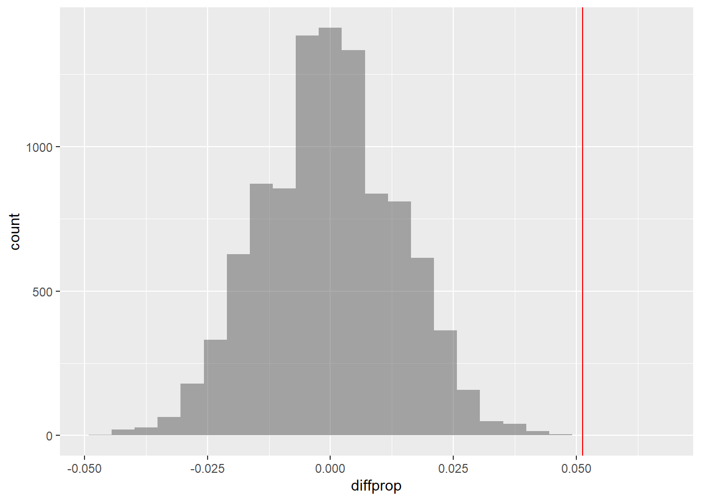
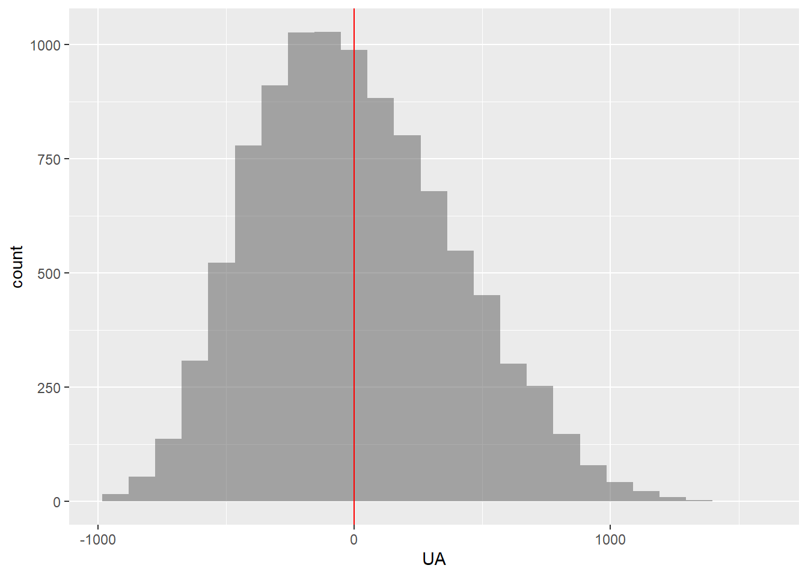
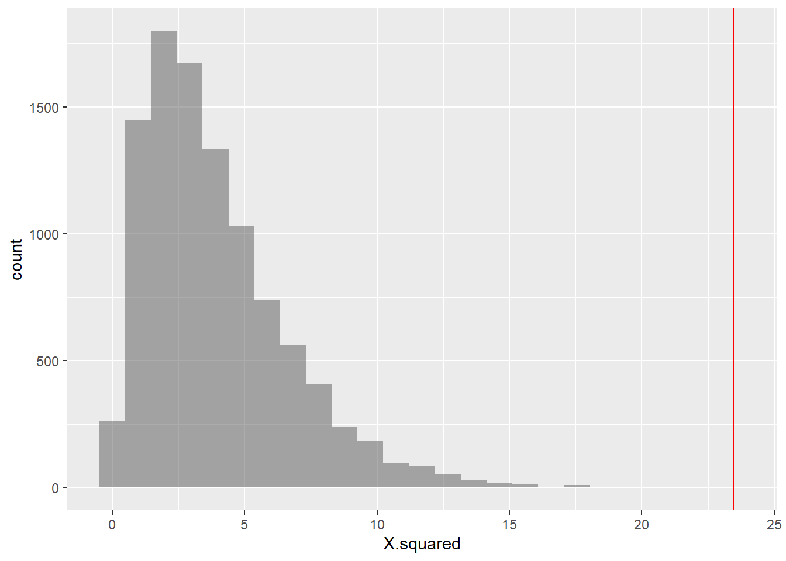
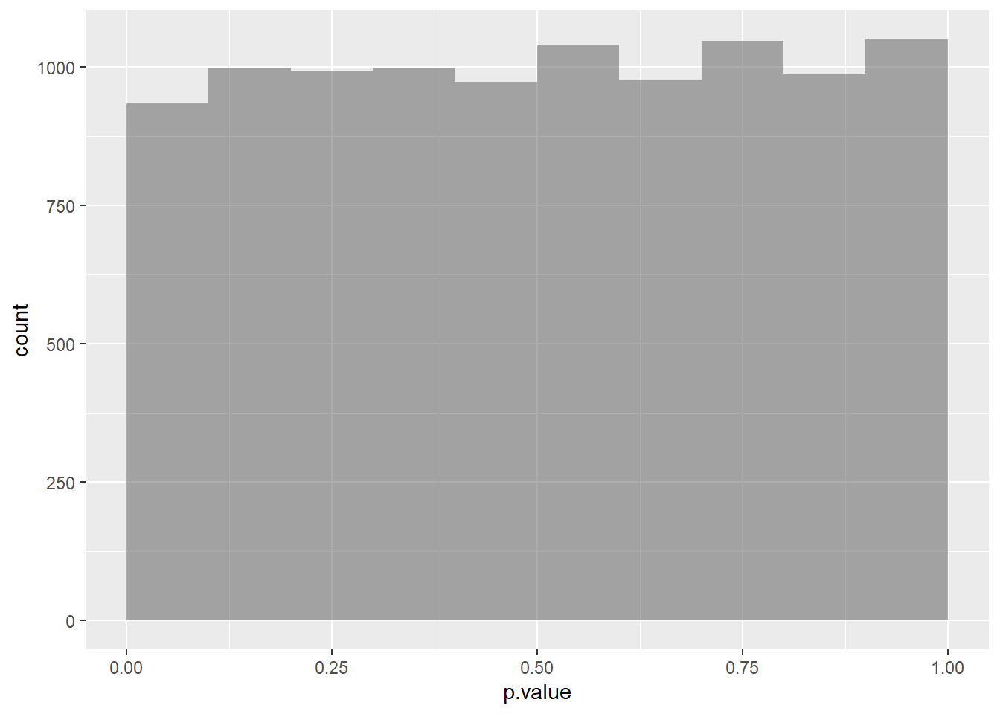

A student conducted a study of hot wings and beer consumption at a Bar. She asked patrons at the bar to record their consumption of hot wings and beer over the course of several hours. She wanted to know if people who ate more hot wings would then drink more beer. In addition, she investigated whether or not gender had an impact on hot wings or beer consumption.
categorical variables:
name class levels n missing
1 Gender character 2 30 0
distribution
1 F (50%), M (50%)
quantitative variables:
name class min Q1 median Q3 max mean sd n missing
1 ID integer 1 8.25 15.5 22.75 30 15.50000 8.803408 30 0
2 Hotwings integer 4 8.00 12.5 15.50 21 11.93333 4.784554 30 0
3 Beer integer 0 24.00 30.0 36.00 48 26.20000 11.842064 30 0
Let us calculate the observed difference in Hotwings consumption between Males and Females ( Gender)
gf_boxplot(data = Beerwings, Hotwings ~ Gender, title ="Hotwings Consumption by Gender")
The observed difference in mean consumption of Hotwings between Males and Females is 5.2. Could this have occurred by chance? Here is our formulation of the Hypotheses:
prop1(~ diffmean >= obs_diff_wings, data = null_dist_wings)
prop_TRUE
0.000999001
The \(\color{red}{red\ line}\) shows the actual measured mean difference in Hot Wings consumption. The probability that our Permutation distribution is able to equal or exceed that number is \(0.001998002\) and we have to reject the Null Hypothesis that the means are identical.
categorical variables:
name class levels n missing
1 Group character 2 1687 0
distribution
1 ILEC (98.6%), CLEC (1.4%)
quantitative variables:
name class min Q1 median Q3 max mean sd n missing
1 Time numeric 0 0.75 3.63 7.35 191.6 8.522009 14.78848 1687 0
Show the Code
mean(Time ~ Group, data = verizon)
CLEC ILEC
16.509130 8.411611
Show the Code
obs_diff_verizon <-diffmean(Time ~ Group, data = verizon)obs_diff_verizon
categorical variables:
name class levels n missing
1 Gender character 2 17019 3
2 Age character 5 17019 3
3 Age25 character 2 17019 3
4 Offense character 2 17022 0
5 Recid character 2 17022 0
6 Type character 3 17022 0
distribution
1 M (87.7%), F (12.3%)
2 25-34 (36.6%), 35-44 (23.7%) ...
3 Over 25 (81.9%), Under 25 (18.1%)
4 Felony (80.6%), Misdemeanor (19.4%)
5 No (68.4%), Yes (31.6%)
6 No Recidivism (68.4%), New (20.2%) ...
quantitative variables:
name class min Q1 median Q3 max mean sd n missing
1 Days integer 0 241 418 687 1095 473.3275 283.1393 5386 11636
There are some missing values in the variable Age25. The complete.cases command gives the row numbers where values are not missing. We create a new data frame omitting the rows where there is a missing value in the ‘Age25’ variable.
Name Country Semifinal Final
1 CHEONG Jun Hoong Malaysia 325.50 397.50
2 SI Yajie China 382.80 396.00
3 REN Qian China 367.50 391.95
4 KIM Mi Rae North Korea 346.00 385.55
5 WU Melissa Australia 318.70 370.20
6 KIM Kuk Hyang North Korea 360.85 360.00
Show the Code
inspect(Diving2017)
categorical variables:
name class levels n missing
1 Name character 12 12 0
2 Country character 8 12 0
distribution
1 SI Yajie (8.3%) ...
2 Canada (16.7%), China (16.7%) ...
quantitative variables:
name class min Q1 median Q3 max mean sd n
1 Semifinal numeric 313.70 322.2000 325.625 356.575 382.8 338.500 22.94946 12
2 Final numeric 283.35 318.5875 358.925 387.150 397.5 350.475 40.02204 12
missing
1 0
2 0
The data is made up of paired observations per swimmer. So we need to take the difference between the two swim records for each swimmer and then shuffle the differences to either polarity. Another way to look at this is to shuffle the records between Semifinal and Final on a per Swimmer basis.
Show the Code
Diving2017
Name Country Semifinal Final
1 CHEONG Jun Hoong Malaysia 325.50 397.50
2 SI Yajie China 382.80 396.00
3 REN Qian China 367.50 391.95
4 KIM Mi Rae North Korea 346.00 385.55
5 WU Melissa Australia 318.70 370.20
6 KIM Kuk Hyang North Korea 360.85 360.00
7 ITAHASHI Minami Japan 313.70 357.85
8 BENFEITO Meaghan Canada 355.15 331.40
9 PAMG Pandelela Malaysia 322.75 322.40
10 CHAMANDY Olivia Canada 320.55 307.15
11 PARRATTO Jessica USA 322.75 302.35
12 MURILLO URREA Carolina Colombia 325.75 283.35
Show the Code
Diving2017 %>%diffmean(data = ., Final ~ Semifinal, only.2 =FALSE)
LaGuardia Airport (LGA) is one of three major airports that serves the New York City metropolitan area. In 2008, over 23 million passengers and over 375 000 planes flew in or out of LGA. United Airlines and America Airlines are two major airlines that schedule services at LGA. The data set FlightDelays contains information on all 4029 departures of these two airlines from LGA during May and June 2009.
categorical variables:
name class levels n missing
1 Carrier character 2 4029 0
2 Destination character 7 4029 0
3 DepartTime character 5 4029 0
4 Day character 7 4029 0
5 Month character 2 4029 0
6 Delayed30 character 2 4029 0
distribution
1 AA (72.1%), UA (27.9%)
2 ORD (44.3%), DFW (22.8%), MIA (15.1%) ...
3 8-Noon (26.1%), Noon-4pm (26%) ...
4 Fri (15.8%), Mon (15.6%), Tue (15.6%) ...
5 June (50.4%), May (49.6%)
6 No (85.2%), Yes (14.8%)
quantitative variables:
name class min Q1 median Q3 max mean sd n
1 ID integer 1 1008 2015 3022 4029 2015.0000 1163.21645 4029
2 FlightNo integer 71 371 691 787 2255 827.1035 551.30939 4029
3 FlightLength integer 68 155 163 228 295 185.3011 41.78783 4029
4 Delay integer -19 -6 -3 5 693 11.7379 41.63050 4029
missing
1 0
2 0
3 0
4 0
The variables in the flightDelays dataset are:
flightDelay dataset variables
Variable
Description
Carrier
UA=United Airlines, AA=American Airlines
FlightNo
Flight number
Destination
Airport code
DepartTime
Scheduled departure time in 4 h intervals
Day
Day of the Week
Month
May or June
Delay
Minutes flight delayed (negative indicates early departure)
Delayed30
Departure delayed more than 30 min? Yes or No
FlightLength
Length of time of flight (minutes)
Let us compute the proportion of times that each carrier’s flights was delayed more than 20 min. We will conduct a two-sided test to see if the difference in these proportions is statistically significant.
We see carrier AA has a 17.13% chance of delays>= 20, while UA has 22.26% chance. The difference is 5.12%. Is this statistically significant? We take the Delays for both Carriers and perform a permutation test by shuffle on the carrier variable:
gf_histogram(data = null_dist_delay, ~ diffprop) %>%gf_vline(xintercept = obs_diff_delay, color ="red")

It appears that the difference indelay times is significant. We can compute the p-value based on this test:
Show the Code
2*mean(null_dist_delay >= obs_diff_delay)
[1] 4e-04
which is very small. Hence we reject the null Hypothesis that there is no difference between carriers on delay times.
Compute the variance in the flight delay lengths for each carrier. Conduct a test to see if the variance for United Airlines differs from that of American Airlines.
Show the Code
var(data = flightDelays, Delay ~ Carrier)
AA UA
1606.457 2037.525
Show the Code
# There is no readymade function in mosaic called `diffvar`...so...we construct oneobs_diff_var <-diff(var(data = flightDelays, Delay ~ Carrier))obs_diff_var
UA
431.0677
The difference in variances in Delay between the two carriers is \(-431.0677\). In our Permutation Test, we shuffle the Carrier variable:
# The null distribution variable is called `UA`gf_histogram(data = null_dist_var, ~ UA) %>%gf_vline(xintercept = obs_diff_delay, color ="red")

Show the Code
2*mean(null_dist_var >= obs_diff_var)
[1] 0.2924
Clearly there is no case for a significant difference in variances!
Case Study #6: Walmart vs Target
Is there a difference in the price of groceries sold by the two retailers Target and Walmart? The data set Groceries contains a sample of grocery items and their prices advertised on their respective web sites on one specific day.
Inspect the data set, then explain why this is an example of matched pairs data.
Compute summary statistics of the prices for each store.
Conduct a permutation test to determine whether or not there is a difference in the mean prices.
Create a histogram bar-chart of the difference in prices. What is unusual about Quaker Oats Life cereal?
Redo the hypothesis test without this observation. Do you reach the same conclusion?
categorical variables:
name class levels n missing
1 Product character 30 30 0
2 Size character 24 30 0
distribution
1 Annie's Macaroni & Cheese (3.3%) ...
2 18oz (10%), 12oz (6.7%) ...
quantitative variables:
name class min Q1 median Q3 max mean sd n missing
1 Target numeric 0.99 1.8275 2.545 3.140 7.99 2.762333 1.582128 30 0
2 Walmart numeric 1.00 1.7600 2.340 2.955 6.98 2.705667 1.560211 30 0
We see that the comparison is to be made between two prices for the same product, and hence this is one more example of paired data, as in Case Study #4. Let us plot the prices for the products:
We see that the price difference between Walmart and Target prices is highest for the Product named Quaker Oats Life Cereal Original. Let us check the mean difference in prices:
obs_diff_price_less =mean( ~ Walmart - Target, data = groceries_less)obs_diff_price_less
[1] -0.1558621
Show the Code
polarity_less <-c(rep(1, 15), rep(-1,14)) # Due to resampling this small bias makes no differencenull_dist_price_less <-do(100000) *mean(data = groceries_less, ~(Walmart-Target) *resample(polarity_less,replace =TRUE))null_dist_price_less %>%head()
Case Study 7: Proportions between Categorical Variables
Let us try a dataset with Qualitative / Categorical data. This is a General Social Survey dataset, and we have people with different levels of Education stating their opinion on the Death Penalty. We want to know if these two Categorical variables have a correlation, i.e. can the opinions in favour of the Death Penalty be explained by the Education level?
Since data is Categorical, we need to take counts in a table, and then implement a chi-square test. In the test, we will permute the Education variable to see if we can see how significant its effect size is.
categorical variables:
name class levels n missing
1 Region character 7 2765 0
2 Gender character 2 2765 0
3 Race character 3 2765 0
4 Education character 5 2760 5
5 Marital character 5 2765 0
6 Religion character 13 2746 19
7 Happy character 3 1369 1396
8 Income character 24 1875 890
9 PolParty character 8 2729 36
10 Politics character 7 1331 1434
11 Marijuana character 2 851 1914
12 DeathPenalty character 2 1308 1457
13 OwnGun character 3 924 1841
14 GunLaw character 2 916 1849
15 SpendMilitary character 3 1324 1441
16 SpendEduc character 3 1343 1422
17 SpendEnv character 3 1322 1443
18 SpendSci character 3 1266 1499
19 Pres00 character 5 1749 1016
20 Postlife character 2 1211 1554
distribution
1 North Central (24.7%) ...
2 Female (55.6%), Male (44.4%)
3 White (79.1%), Black (14.8%) ...
4 HS (53.8%), Bachelors (16.1%) ...
5 Married (45.9%), Never Married (25.6%) ...
6 Protestant (53.2%), Catholic (24.5%) ...
7 Pretty happy (57.3%) ...
8 40000-49999 (9.1%) ...
9 Ind (19.3%), Not Str Dem (18.9%) ...
10 Moderate (39.2%), Conservative (15.8%) ...
11 Not legal (64%), Legal (36%)
12 Favor (68.7%), Oppose (31.3%)
13 No (65.5%), Yes (33.5%) ...
14 Favor (80.5%), Oppose (19.5%)
15 About right (46.5%) ...
16 Too little (73.9%) ...
17 Too little (60%) ...
18 About right (49.7%) ...
19 Bush (50.6%), Gore (44.7%) ...
20 Yes (80.5%), No (19.5%)
quantitative variables:
name class min Q1 median Q3 max mean sd n missing
1 ID integer 1 692 1383 2074 2765 1383 798.3311 2765 0
Note how all variables are Categorical !! Education has five levels:
Show the Code
GSS2002 %>%count(Education)
Education n
1 Bachelors 443
2 Graduate 230
3 HS 1485
4 Jr Col 202
5 Left HS 400
6 <NA> 5
# We can plot a heatmap-like `mosaic chart` for this table, using `ggplot`:# https://stackoverflow.com/questions/19233365/how-to-create-a-marimekko-mosaic-plot-in-ggplot2ggplot(data = gss_summary, aes( x = Education, y = edu_prop)) +geom_bar(aes(width = edu_count, fill = DeathPenalty), stat ="identity", position ="fill", colour ="black") +geom_text(aes(label = scales::percent(edu_prop)), position =position_stack(vjust =0.5)) +# if labels are desiredfacet_grid(~ Education, scales ="free_x", space ="free_x") +theme(scale_fill_brewer(palette ="RdYlGn")) +# theme(panel.spacing.x = unit(0, "npc")) + # if no spacing preferred between barstheme_void()
Let us now perform the base chisq test: We need a table and then the chisq test:
Show the Code
gss_table <-tally(DeathPenalty ~ Education, data = gss2002)gss_table
Education
DeathPenalty Bachelors Graduate HS Jr Col Left HS
Favor 135 64 511 71 117
Oppose 71 50 200 16 72
Show the Code
# Get the observed chi-square statisticobservedChi2 <- mosaic::chisq(tally(DeathPenalty ~ Education, data = gss2002))observedChi2
X.squared
23.45093
Show the Code
# Actual chi-square teststats::chisq.test(tally(DeathPenalty ~ Education, data = gss2002))
Pearson's Chi-squared test
data: tally(DeathPenalty ~ Education, data = gss2002)
X-squared = 23.451, df = 4, p-value = 0.0001029
We should now repeat the test with permutations on Education:
Show the Code
null_chisq <-do(10000) *chisq.test(tally(DeathPenalty ~shuffle(Education), data = gss2002))head(null_chisq)
X.squared df p.value method alternative
X-squared...1 1.839772 4 0.76519840 Pearson's Chi-squared test NA
X-squared...2 3.039865 4 0.55117646 Pearson's Chi-squared test NA
X-squared...3 9.339388 4 0.05315416 Pearson's Chi-squared test NA
X-squared...4 8.379180 4 0.07863525 Pearson's Chi-squared test NA
X-squared...5 2.121217 4 0.71347559 Pearson's Chi-squared test NA
X-squared...6 1.911131 4 0.75209991 Pearson's Chi-squared test NA
data .row
X-squared...1 tally(DeathPenalty ~ shuffle(Education), data = gss2002) 1
X-squared...2 tally(DeathPenalty ~ shuffle(Education), data = gss2002) 1
X-squared...3 tally(DeathPenalty ~ shuffle(Education), data = gss2002) 1
X-squared...4 tally(DeathPenalty ~ shuffle(Education), data = gss2002) 1
X-squared...5 tally(DeathPenalty ~ shuffle(Education), data = gss2002) 1
X-squared...6 tally(DeathPenalty ~ shuffle(Education), data = gss2002) 1
.index
X-squared...1 1
X-squared...2 2
X-squared...3 3
X-squared...4 4
X-squared...5 5
X-squared...6 6
Show the Code
gf_histogram( ~ X.squared, data = null_chisq) %>%gf_vline(xintercept = observedChi2, color ="red")

Show the Code
gf_histogram( ~ p.value, data = null_chisq, binwidth =0.1, center =0.05)

So we would conclude that Education has a significant effect on DeathPenalty opinion!
Source Code
---title: "Permutation Tests"author: "Arvind Venkatadri"date: "`r Sys.Date()`"code-fold: truecode-tools: truecode-line-numbers: truecode-copy: truecode-summary: "Show the Code"execute: freeze: auto---```{r setup, include=FALSE}knitr::opts_chunk$set(echo =TRUE, out.width="50%", out.height ="50%")library(ggplot2)library(dplyr)library(mosaic)```## Permutation Tests### Case Study-1: Hot Wings Orders vs GenderA student conducted a study of hot wings and beer consumption at a Bar.She asked patrons at the bar to record their consumption of hot wingsand beer over the course of several hours. She wanted to know if peoplewho ate more hot wings would then drink more beer. In addition, sheinvestigated whether or not gender had an impact on hot wings or beerconsumption.```{r}Beerwings <-read.csv("../../../../../materials/data/resampling/Beerwings.csv")inspect(Beerwings)```Let us calculate the observed difference in `Hotwings` consumptionbetween Males and Females ( `Gender`)```{r}mean(Hotwings ~ Gender, data = Beerwings)obs_diff_wings <- mosaic::diffmean(data = Beerwings, Hotwings ~ Gender)obs_diff_wings ``````{r}gf_boxplot(data = Beerwings, Hotwings ~ Gender, title ="Hotwings Consumption by Gender")```The observed difference in mean consumption of Hotwings between Malesand Females is 5.2. Could this have occurred by chance? Here is ourformulation of the Hypotheses:$$NULL\ Hypothesis\ H_0 => No\ difference\ between\ means\ across\ groups\\Alternative\ Hypothesis\H_a =>Significant\ difference\ between\ the\ means\$$So we perform a Permutation Test to check:```{r}null_dist_wings <-do(1000) *diffmean(Hotwings ~shuffle(Gender), data = Beerwings)null_dist_wings %>%head()gf_histogram(data = null_dist_wings, ~ diffmean) %>%gf_vline(xintercept = obs_diff_wings, colour ="red")prop1(~ diffmean >= obs_diff_wings, data = null_dist_wings)```The $\color{red}{red\ line}$ shows the actual measured mean differencein Hot Wings consumption. The probability that our Permutationdistribution is able to equal or exceed that number is $0.001998002$ andwe have to reject the Null Hypothesis that the means are identical.### Case Study-2: Verizon```{r}verizon <-read.csv("../../../../../materials/data/resampling/Verizon.csv")inspect(verizon)``````{r}mean(Time ~ Group, data = verizon)obs_diff_verizon <-diffmean(Time ~ Group, data = verizon)obs_diff_verizon``````{r}null_dist_verizon <-do(1000) *diffmean(Time ~shuffle(Group), data = verizon)gf_histogram(data = null_dist_verizon, ~ diffmean) %>%gf_vline(xintercept = obs_diff_wings, colour ="red")prop1(~ diffmean >= obs_diff_wings, data = null_dist_verizon)```### Case Story-3: RecidivismDo criminals released after a jail term commit crimes again?```{r}recidivism <-read.csv("../../../../../materials/data/resampling/Recidivism.csv")inspect(recidivism)```There are some missing values in the variable <tt>`Age25`</tt>. The<tt>`complete.cases`</tt> command gives the row numbers where valuesare not missing. We create a new data frame omitting the rows wherethere is a missing value in the <tt> 'Age25' </tt> variable.```{r}recidivism_na <- recidivism %>% tidyr::drop_na(Age25)```Also, the variable <tt>`Recid`</tt> is a factor variable coded "Yes" or"No". We convert it to a numeric variable of 1's and 0's.```{r}recidivism_na <- recidivism_na %>%mutate(Recid2 =ifelse(Recid=="Yes", 1, 0))obs_diff_recid <-diffmean( Recid2 ~ Age25, data = recidivism_na)obs_diff_recidnull_dist_recid <-do(1000) *diffmean( Recid2 ~shuffle(Age25), data = recidivism_na)gf_histogram( ~ diffmean, data = null_dist_recid) %>%gf_vline(xintercept = obs_diff_recid, colour ="red")```### Case Study-4: Matched Pairs: Results from a diving championship.```{r}Diving2017 <-read.csv("../../../../../materials/data/resampling/Diving2017.csv")head(Diving2017)inspect(Diving2017)```The data is made up of **paired** observations per swimmer. So we needto take the difference between the two swim records for *each* swimmerand then shuffle the differences to either polarity. Another way to lookat this is to shuffle the records between `Semifinal` and `Final` on aper Swimmer basis.```{r}Diving2017Diving2017 %>%diffmean(data = ., Final ~ Semifinal, only.2 =FALSE)obs_diff_swim <-mean(~ Final - Semifinal, data = Diving2017)obs_diff_swim``````{r}polarity <-c(rep(1, 6), rep(-1,6))polaritynull_dist_swim <-do(100000) *mean(data = Diving2017, ~(Final - Semifinal) *resample(polarity,replace =TRUE))null_dist_swim %>%head()gf_histogram(data = null_dist_swim, ~mean) %>%gf_vline(xintercept = obs_diff_swim, colour ="red")```### Case Study #5: Flight DelaysLaGuardia Airport (LGA) is one of three major airports that serves theNew York City metropolitan area. In 2008, over 23 million passengers andover 375 000 planes flew in or out of LGA. United Airlines and AmericaAirlines are two major airlines that schedule services at LGA. The dataset `FlightDelays` contains information on all 4029 departures of thesetwo airlines from LGA during May and June 2009.```{r}flightDelays <-read.csv("../../../../../materials/data/resampling/FlightDelays.csv")inspect(flightDelays)```The variables in the `flightDelays` dataset are:| Variable | Description ||------------------|------------------------------------------------------|| Carrier | UA=United Airlines, AA=American Airlines || FlightNo | Flight number || Destination | Airport code || DepartTime | Scheduled departure time in 4 h intervals || Day | Day of the Week || Month | May or June || Delay | Minutes flight delayed (negative indicates early departure) || Delayed30 | Departure delayed more than 30 min? Yes or No || FlightLength | Length of time of flight (minutes) |: flightDelay dataset variablesa) Let us compute the proportion of times that each carrier's flights was delayed more than 20 min. We will conduct a two-sided test to see if the difference in these proportions is statistically significant.```{r flightDelays-a}prop(data = flightDelays, Delay >=20~ Carrier)obs_diff_delay <-diffprop(data = flightDelays, Delay >=20~ Carrier)obs_diff_delay```We see carrier AA has a 17.13% chance of delays\>= 20, while UA has22.26% chance. The difference is 5.12%. Is this statisticallysignificant? We take the Delays for both Carriers and perform apermutation test by `shuffle` on the `carrier` variable:```{r}null_dist_delay <-do(10000) *diffprop(data = flightDelays, Delay >=20~shuffle(Carrier))null_dist_delay %>%head()gf_histogram(data = null_dist_delay, ~ diffprop) %>%gf_vline(xintercept = obs_diff_delay, color ="red")```It appears that the difference indelay times is significant. We cancompute the `p-value` based on this test:```{r}2*mean(null_dist_delay >= obs_diff_delay)```which is very small. Hence we reject the null Hypothesis that there isno difference between `carrier`s on `delay times`.b) Compute the variance in the flight delay lengths for each carrier. Conduct a test to see if the variance for United Airlines differs from that of American Airlines.```{r}var(data = flightDelays, Delay ~ Carrier)# There is no readymade function in mosaic called `diffvar`...so...we construct oneobs_diff_var <-diff(var(data = flightDelays, Delay ~ Carrier))obs_diff_var```The difference in variances in `Delay` between the two `carrier`s is$-431.0677$. In our Permutation Test, we `shuffle` the `Carrier`variable:```{r}obs_diff_var <-diff(var(data = flightDelays, Delay ~ Carrier))null_dist_var <-do(10000) *diff(var(data = flightDelays, Delay ~shuffle(Carrier)))null_dist_var %>%head()# The null distribution variable is called `UA`gf_histogram(data = null_dist_var, ~ UA) %>%gf_vline(xintercept = obs_diff_delay, color ="red")2*mean(null_dist_var >= obs_diff_var)```Clearly there is no case for a significant difference in variances!### Case Study #6: Walmart vs TargetIs there a difference in the price of groceries sold by the tworetailers Target and Walmart? The data set `Groceries` contains a sampleof grocery items and their prices advertised on their respective websites on one specific day.a) Inspect the data set, then explain why this is an example of matched pairs data.b) Compute summary statistics of the prices for each store.c) Conduct a permutation test to determine whether or not there is a difference in the mean prices.d) Create a ~~histogram~~ bar-chart of the difference in prices. What is unusual about Quaker Oats Life cereal?e) Redo the hypothesis test without this observation. Do you reach the same conclusion?```{r}groceries <-read.csv("../../../../../materials/data/resampling/Groceries.csv") %>%mutate(Product = stringr::str_squish(Product))head(groceries)inspect(groceries)```We see that the comparison is to be made between two prices for the*same* product, and hence this is one more example of `paired data`, asin Case Study #4. Let us plot the prices for the products:```{r}gf_col(data = groceries, Target ~ Product,fill ="#0073C299",width =0.5 ) %>%gf_col(data = groceries,-Walmart ~ Product,fill ="#EFC00099",ylab ="Prices",width =0.5 ) %>%gf_col(data = groceries %>%filter(Product =="Quaker Oats Life Cereal Original"), -Walmart ~ Product,fill ="red", width =0.5) %>%gf_theme(theme_classic()) %>%gf_theme(ggplot2::theme(axis.text.x =element_text(size =8,face ="bold",vjust =0,hjust =1 ))) %>%gf_theme(ggplot2::coord_flip())```We see that the price difference between Walmart and Target prices ishighest for the `Product` named `Quaker Oats Life Cereal Original`. Letus check the mean difference in prices:```{r}diffmean(data = groceries, Walmart ~ Target, only.2 =FALSE)obs_diff_price =mean( ~ Walmart - Target, data = groceries)obs_diff_price```Let us perform the pair-wise permutation test on prices, by shufflingthe two store names:```{r}polarity <-c(rep(1, 15), rep(-1,15))polaritynull_dist_price <-do(100000) *mean(data = groceries, ~(Walmart-Target) *resample(polarity,replace =TRUE))null_dist_price %>%head()gf_histogram(data = null_dist_price, ~mean) %>%gf_vline(xintercept = obs_diff_price, colour ="red")2*(sum(null_dist_price >= obs_diff_price +1)/(100000+1)) #P-value```Does not seem to be aby significant difference in prices...Suppose we knock off the Quaker Cereal data item...```{r}which(groceries$Product =="Quaker Oats Life Cereal Original")groceries_less <- groceries[-2,]groceries_lessobs_diff_price_less =mean( ~ Walmart - Target, data = groceries_less)obs_diff_price_lesspolarity_less <-c(rep(1, 15), rep(-1,14)) # Due to resampling this small bias makes no differencenull_dist_price_less <-do(100000) *mean(data = groceries_less, ~(Walmart-Target) *resample(polarity_less,replace =TRUE))null_dist_price_less %>%head()gf_histogram(data = null_dist_price_less, ~mean) %>%gf_vline(xintercept = obs_diff_price_less, colour ="red")1-mean(null_dist_price_less >= obs_diff_price_less) #P-value```### Case Study 7: Proportions between Categorical VariablesLet us try a dataset with Qualitative / Categorical data. This is aGeneral Social Survey dataset, and we have people with different levelsof `Education` stating their opinion on the `Death Penalty`. We want toknow if these two Categorical variables have a correlation, i.e. can theopinions in favour of the Death Penalty be explained by the Educationlevel?Since data is Categorical, we need to take `counts` in a table, and thenimplement a `chi-square test`. In the test, we will permute the`Education` variable to see if we can see how significant its *effectsize* is.```{r}GSS2002 <-read.csv("../../../../../materials/data/resampling/GSS2002.csv")inspect(GSS2002)```Note how *all* variables are Categorical !! `Education` has five`levels`:```{r}GSS2002 %>%count(Education)GSS2002 %>%count(DeathPenalty)```Let us drop NA entries in Education and Death Penalty. And set up atable for the chi-square test.```{r,warning=FALSE,message=FALSE}gss2002 <- GSS2002 %>% dplyr::select(Education, DeathPenalty) %>% tidyr::drop_na(., c(Education, DeathPenalty))dim(gss2002)gss_summary <- gss2002 %>%mutate(Education =factor( Education,levels =c("Bachelors", "Graduate", "Jr Col", "HS", "Left HS"),labels =c("Bachelors", "Graduate", "Jr Col", "HS", "Left HS") ),DeathPenalty =as.factor(DeathPenalty) ) %>%group_by(Education, DeathPenalty) %>%summarise(count =n()) %>%# This is good for a chisq test# Add two more columns to faciltate mosaic/Marrimekko Plot# mutate(edu_count =sum(count), edu_prop = count /sum(count)) %>%ungroup() gss_summary# We can plot a heatmap-like `mosaic chart` for this table, using `ggplot`:# https://stackoverflow.com/questions/19233365/how-to-create-a-marimekko-mosaic-plot-in-ggplot2ggplot(data = gss_summary, aes( x = Education, y = edu_prop)) +geom_bar(aes(width = edu_count, fill = DeathPenalty), stat ="identity", position ="fill", colour ="black") +geom_text(aes(label = scales::percent(edu_prop)), position =position_stack(vjust =0.5)) +# if labels are desiredfacet_grid(~ Education, scales ="free_x", space ="free_x") +theme(scale_fill_brewer(palette ="RdYlGn")) +# theme(panel.spacing.x = unit(0, "npc")) + # if no spacing preferred between barstheme_void() ```Let us now perform the base `chisq test`: We need a `table` and then the`chisq` test:```{r}gss_table <-tally(DeathPenalty ~ Education, data = gss2002)gss_table# Get the observed chi-square statisticobservedChi2 <- mosaic::chisq(tally(DeathPenalty ~ Education, data = gss2002))observedChi2# Actual chi-square teststats::chisq.test(tally(DeathPenalty ~ Education, data = gss2002))```We should now repeat the test with permutations on `Education`:```{r}null_chisq <-do(10000) *chisq.test(tally(DeathPenalty ~shuffle(Education), data = gss2002))head(null_chisq)gf_histogram( ~ X.squared, data = null_chisq) %>%gf_vline(xintercept = observedChi2, color ="red")gf_histogram( ~ p.value, data = null_chisq, binwidth =0.1, center =0.05)```So we would conclude that `Education` has a significant effect on`DeathPenalty` opinion!